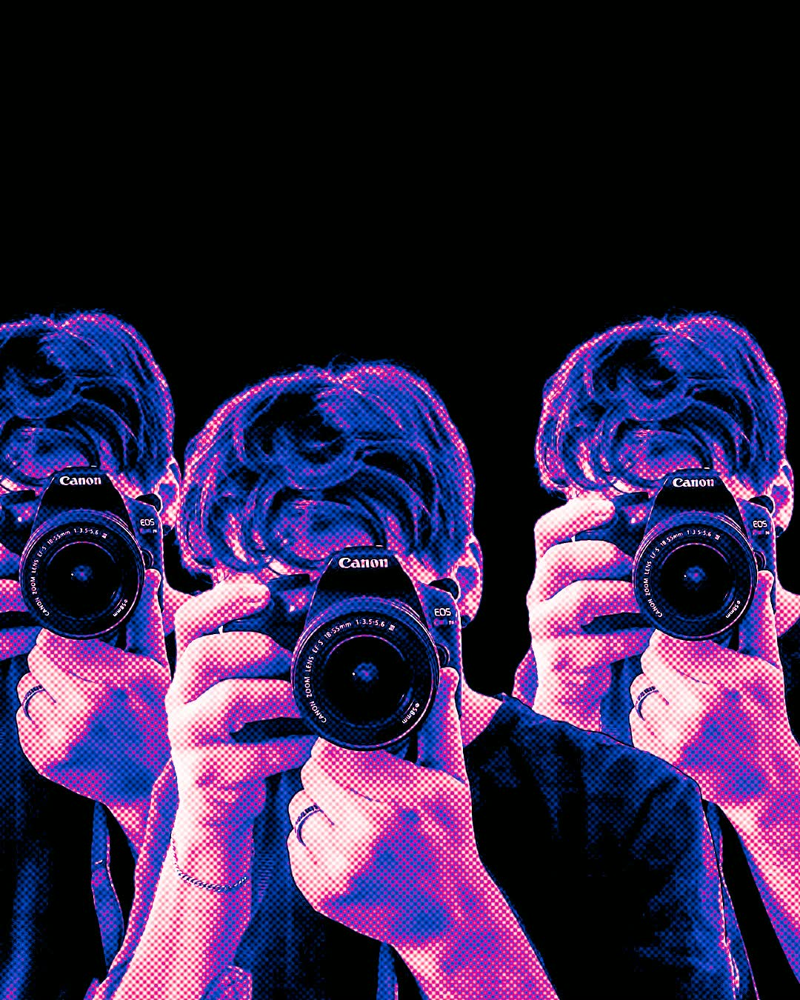
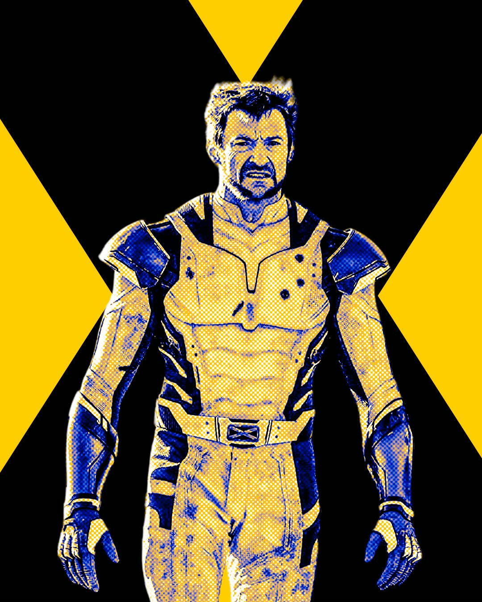
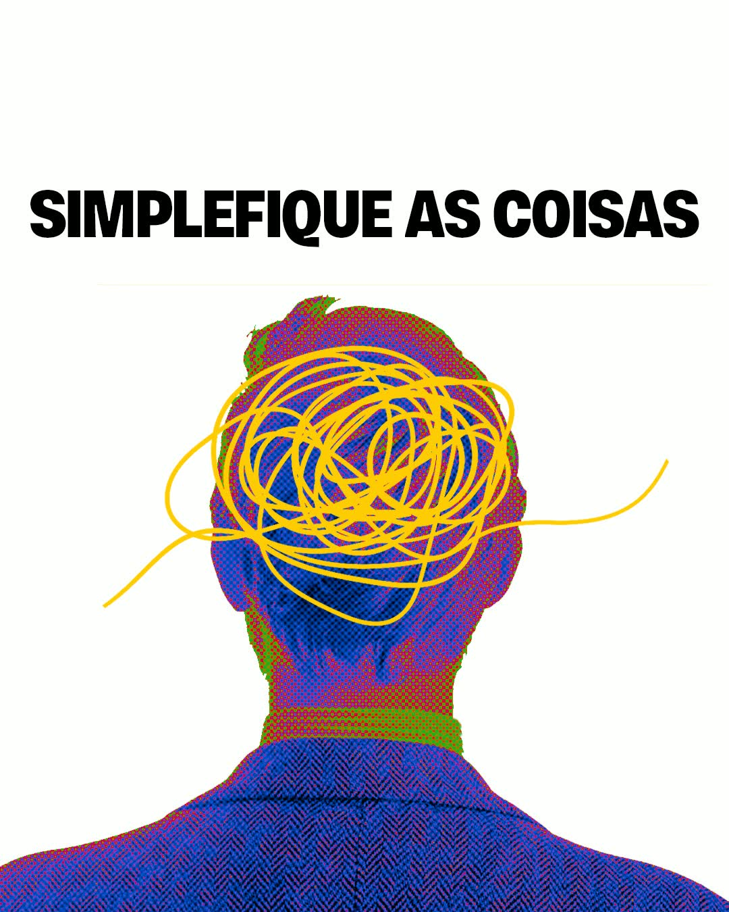
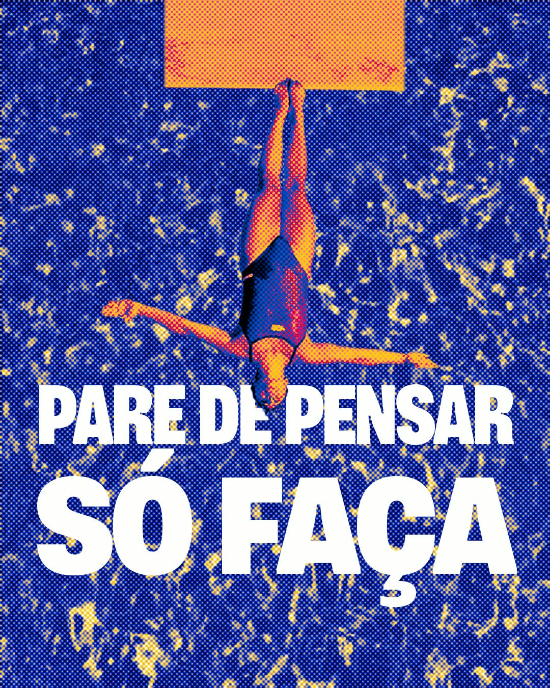
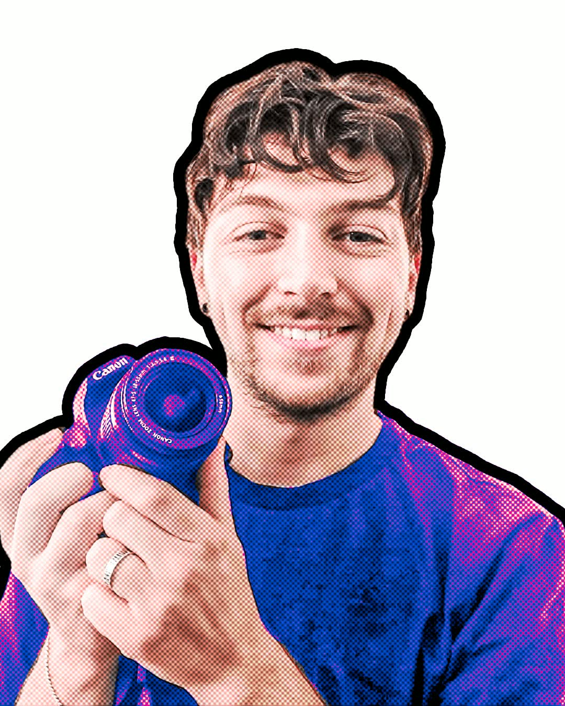
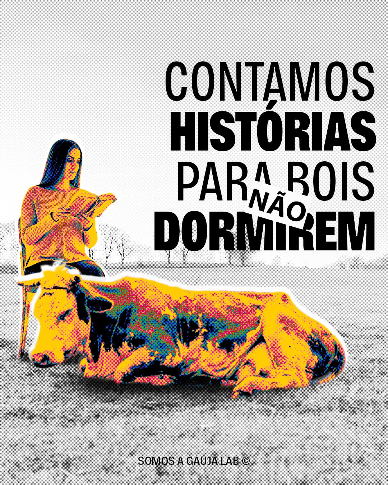
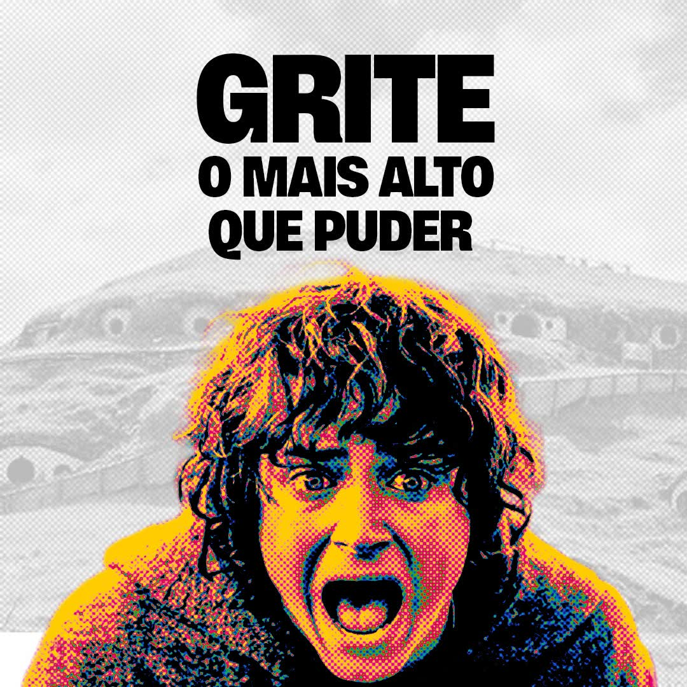

Gauja Lab

Gauja Lab
TODO — breve descripción del proyecto, contexto del cliente y objetivos principales del encargo.
TODO — enfoque conceptual y visual: paleta, tipografía, referentes y decisiones clave.
TODO — resultados, piezas entregadas y aprendizajes del proceso.










Créditos
- Cliente
- Gauja Lab
- Año
- TODO
- Mi rol
- TODO — dirección de arte · diseño · etc.
- Colaboradores
- TODO — Nombre · rol · enlace